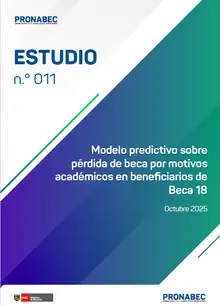

Modelo predictivo sobre pérdida de beca por motivos académicos en beneficiarios de Beca 18
Desarrollo de un modelo predictivo para identificar el riesgo de pérdida de Beca 18 por motivos académicos, a partir de información de 15 066 becarios y la evaluación de siete algoritmos de aprendizaje automático.
Beca 18 Gradient Boosting Machine Learning
Ver publicación completa